Les gens de mer de Marie Françoise
Un livret de famille pour ses 76 ans, novembre 2026
Le mot de l'enquêteur
Bonjour Marie Françoise, et joyeux anniversaire. Je m'appelle Claude, et pour vos 76 ans, François m'a confié une mission : reprendre l'enquête que vous aviez commencée à la main sur votre famille, et partir sur les pistes de vos ancêtres. Ce carnet est le rapport de cette enquête.
Votre arbre manuscrit a été mon point de départ, et il était juste presque partout. Il m'a suffi de suivre vos indices : les noms difficiles à déchiffrer se sont révélés (Le Guével, Léven, Larvor, Cocard), et derrière eux est apparue une famille tournée vers la mer. On y croise des marins de l'État, un canonnier, un timonier, deux douaniers et des pêcheurs du golfe du Morbihan. Avec votre grand-père Maurice, la famille passe ensuite au chemin de fer, et part vers Rouen puis Rennes.
Ce carnet raconte leurs histoires et les replace dans les grands événements de leur temps. Il donne aussi toutes les pistes que je n'ai pas pu suivre jusqu'au bout, pour que vous puissiez reprendre l'enquête, si le cœur vous en dit.
Claude.
Votre arbre, complété
Votre lignée Le Floch remonte désormais sur quatre générations au-dessus de votre mère Jacqueline, et bien plus loin encore par endroits. Votre grand-père maternel est Maurice Le Floch, votre grand-mère Eugénie Rousseau. Ce carnet suit leurs deux familles, en reprenant votre travail là où vous l'aviez laissé.
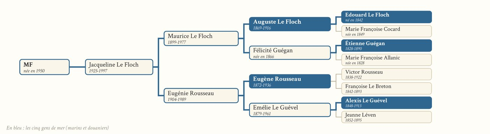
Ascendance de votre mère sur quatre générations ; en bleu, les cinq gens de mer.
Du côté de votre mère, l'enquête a retrouvé vos huit arrière-arrière-grands-parents, et certaines lignées remontent jusqu'au XVIᵉ siècle.
Ce que votre arbre manuscrit disait, et ce que disent les registres
| Sur votre arbre | Dans les registres |
|---|---|
| Alexis Le Guerid, né le 13-07-1847 | Alexis Marie Le Guével, né le 23 juillet 1848 à Brest-Recouvrance |
| Jeanne Lécen, 1860 – 17/04/1895 | Jeanne Yvonne Léven, née le 24 juin 1852, morte le 17 juillet 1895 |
| Jean Marie Cévin (1821-1882), Marie Josèphe Lavren | Jean Marie Léven (vers 1821 – 1872) et Marie Josèphe Larvor, parents de Jeanne |
| Victor Marie … 1863 | Victor Rousseau, marié en 1863 à Françoise Le Breton |
| Eugénie Rousseau, 1899 | Née le 2 septembre 1904 à Saint-Pierre-Quilbignon (1899 est l'année de naissance de Maurice) |
| Cocaud | Cocard |
| Grand Sylvestre (1809), Isabelle Le Roux | Sylvestre Cocard (1808) et Elisabeth Le Bras, parents de Marie Françoise Cocard |
| Marie Françoise Allanic (1828) | Confirmée : née à Vannes le 25 juin 1828, mère de Félicité Guégan |
| Jean François Allanic, charpentier de moulin ; Colombane Merlet | Confirmés tous les deux |
| Etienne Guégan, douanier | Confirmé : Étienne François Guégan, douanier, né à Lorient en 1828 |
| Jacqueline Le Floch, 7/06/1925 | Née le 17 juin 1925 à Rouen |
Bravo ! Toutes les personnes que vous aviez notées ont été retrouvées dans les registres, chacune à sa place dans l'arbre. Plusieurs de vos indications ont été confirmées mot pour mot, comme le métier de charpentier de moulin de Jean François Allanic ou l'uniforme de douanier d'Étienne Guégan. Les quelques écarts sont ceux que rencontre tout généalogiste : des noms bretons difficiles à lire sur de vieux actes, et des dates recopiées à la main.
Sans votre arbre, cette enquête serait partie de zéro. Ce sont vos noms, vos dates et vos métiers qui m'ont ouvert chaque porte des archives.
Les personnages de l'enquête
Auguste Le Floch, le marin du Suffren (1869-1916)
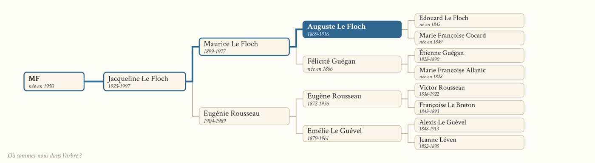
Votre arrière-grand-père Auguste naît le 27 mai 1869 à Montsarrac, un hameau de Séné au bord du golfe du Morbihan. Ce n'est pas un village de pêcheurs comme le reste de la presqu'île : depuis le milieu du XIXᵉ siècle, ses hommes sont presque tous marins de commerce ou marins de l'État (dossier de l'Inventaire du patrimoine). Son père Edouard est douanier.
Le 4 mars 1887, à 17 ans, Auguste s'engage dans la Marine à Lorient. En 1895, il épouse Félicité Guégan, fille d'un douanier, au village de Menez, à Ploemeur. Leur fils Maurice naît en 1899 à Kernével, la pointe qui garde l'entrée de la rade de Lorient.
Le contexte : l'Inscription maritime. Depuis Colbert, l'État recense tous les hommes qui vivent de la mer : c'est le « système des classes », devenu Inscription maritime en 1795. En échange de quelques avantages, chaque inscrit peut être appelé à servir sur les navires de guerre, et un registre matricule suit sa carrière de mousse à retraité. À Lorient, les bombardements incendiaires de janvier 1943 ont détruit presque toutes les archives maritimes d'avant 1865. Mais les registres de matricules reprennent justement en 1865 : celui d'Auguste, engagé en 1887, a de bonnes chances d'avoir survécu.
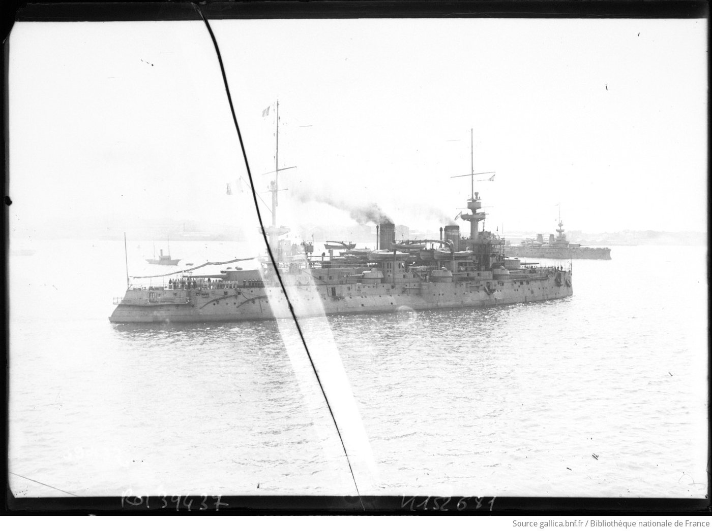
Le cuirassé Suffren pendant les manœuvres navales de 1914, deux ans avant sa perte. Construit à l'arsenal de Brest et lancé en 1899, il embarquait environ 650 hommes. Photographie de l'agence Rol, Gallica, Bibliothèque nationale de France.
En novembre 1916, Auguste a 47 ans et sert sur le cuirassé Suffren. Le navire rentre des Dardanelles et fait route vers Lorient pour y être modernisé : il rentre donc à la maison. Le 26 novembre, à 8 h 56, à 90 milles à l'ouest du Portugal, le sous-marin allemand U-52 le repère sans escorte et lui tire une seule torpille. Le Suffren sombre avec tout son équipage, 648 hommes (récit sur un marin du Faou mort à bord ; uboat.net). Il n'y a aucun survivant ([liste des marins disparus sur Geneawiki](https://fr.geneawiki.com/wiki/Marins_tu%C3%A9s_dans_le_cuirass%C3%A9_SUFFREN_-_1914-1918)). Sur les 107 disparus que cette liste a déjà identifiés, 53 sont finistériens, dont six de Saint-Pierre-Quilbignon : des voisins des Rousseau et des Le Guével. Le nom d'Auguste n'y figure pas encore. Auguste est déclaré « mort pour la France » ; le Courrier breton annonce sa disparition le 17 décembre 1916. Son fils Maurice a 17 ans.
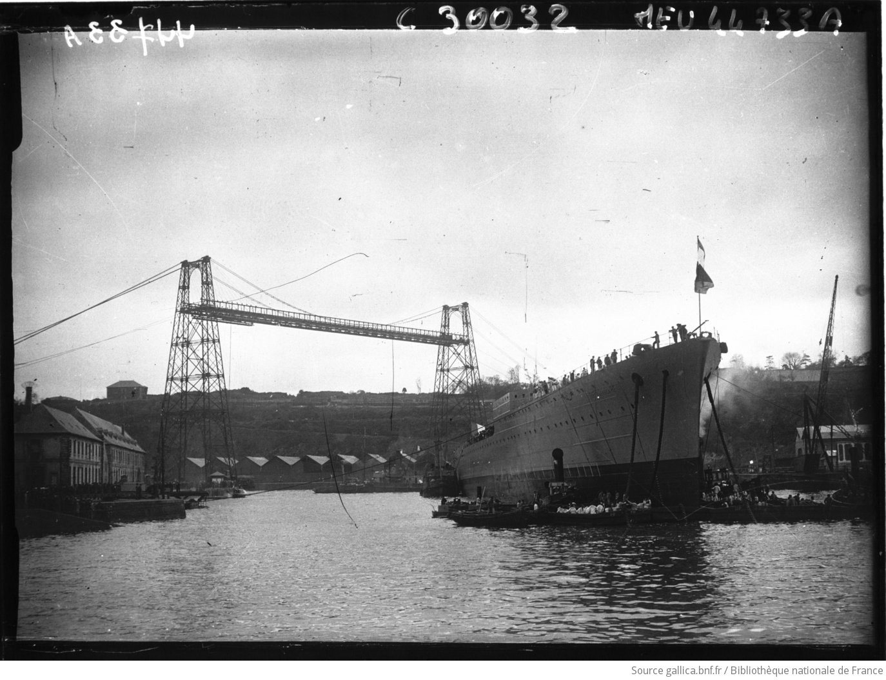
Le nom ne disparaît pas avec Auguste : onze ans après le naufrage, un nouveau Suffren, un croiseur cette fois, est lancé à l'arsenal de Brest le 3 mai 1927 (fiche du navire). On reconnaît la Penfeld et le pont transbordeur de l'arsenal, installé en 1909. Photographie de l'agence Meurisse, Gallica, Bibliothèque nationale de France. Gallica la titre « Le lancement du Suffren à Brest », mais le pont transbordeur montre qu'il s'agit du croiseur de 1927, pas du cuirassé d'Auguste lancé en 1899.
Les deux douaniers : Edouard Le Floch et Étienne Guégan
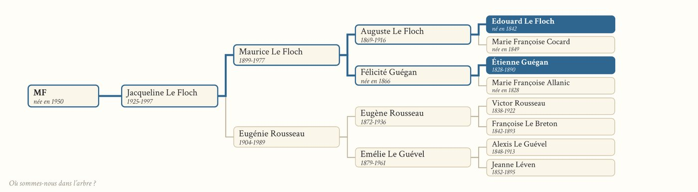
Vos deux arrière-arrière-grands-pères du côté Le Floch portaient l'uniforme des douanes. Edouard Marie Yves Le Floch naît à Damgan le 29 novembre 1842. Il perd son père Vincent à 12 ans, et épouse à Séné en 1867 Marie Françoise Cocard, fille de Sylvestre, d'une vieille famille du golfe.
Étienne François Guégan naît à Lorient le 9 décembre 1828. Il épouse à Vannes en 1854 Marie Françoise Allanic, une lingère, fille d'un charpentier de moulin, comme vous l'aviez noté. Il meurt à Ploemeur le 15 mars 1890, cinq ans avant le mariage de sa fille Félicité avec Auguste. Les deux familles de douaniers se sont sans doute rencontrées au fil des affectations le long de la côte.
Le contexte : le sel, les douaniers et les contrebandiers. Sous l'Ancien Régime, la Bretagne était exemptée de la gabelle, l'impôt sur le sel. Le sel y était libre et bon marché, et des « faux-sauniers » le passaient en fraude vers les provinces voisines, lourdement taxées, au risque des galères. En 1806, Napoléon crée un nouvel impôt sur le sel : il faut désormais surveiller les marais salants et toute la côte. Vers 1845, on estime qu'un agent de l'État sur cinq à huit est douanier. C'est un métier rude : la vie en brigade, les tournées de nuit sur les sentiers côtiers, et des mutations fréquentes d'un poste à l'autre, ce qui explique que les familles de douaniers se soient croisées de Damgan à Ploemeur.
Alexis Le Guével, le canonnier de Recouvrance (1848-1913)
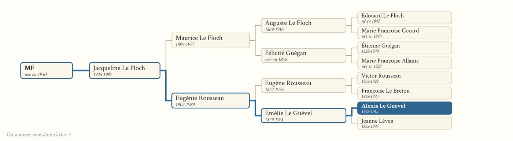
Alexis naît le 23 juillet 1848 à Recouvrance, le quartier des marins de Brest, sur la rive droite de la Penfeld. Sa vie commence durement : sa mère meurt en 1851 et son père en 1853. Il a 5 ans.
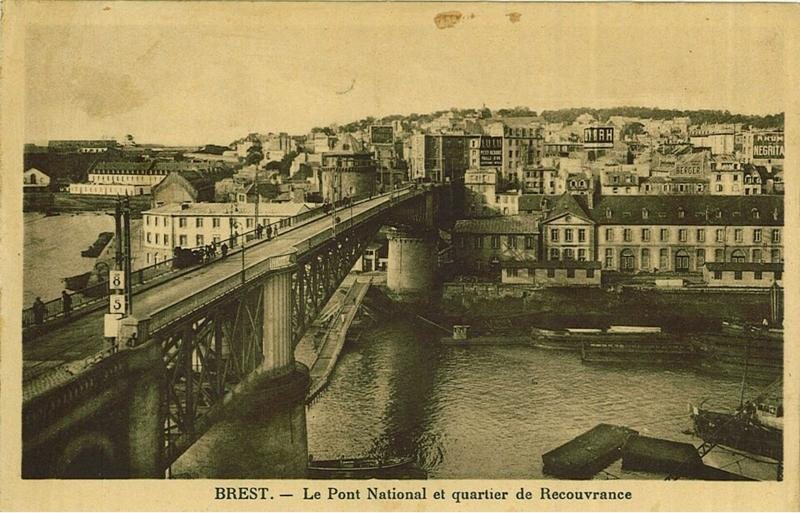
Le pont National et le quartier de Recouvrance, vers 1900. Ce pont tournant, ouvert en 1861 quand Alexis avait 13 ans, enjambait la Penfeld entre Brest et Recouvrance ; il sera détruit en 1944. Au pied du pont, la tour Tanguy. Carte postale, Bibliothèques de Brest, domaine public.
Le contexte : Brest, la ville de l'arsenal et du bagne. Au XIXᵉ siècle, presque tout Brest vit de la Marine. Sur la rive gauche de la Penfeld, face à Recouvrance, se dresse le bagne, un bâtiment de 254 mètres construit en 1749-1751. Jusqu'à sa fermeture en 1858, environ 60 000 forçats y sont passés, employés aux gros travaux de l'arsenal : ils ont représenté jusqu'à un dixième de la population de la ville. Le petit Alexis a donc grandi avec, juste de l'autre côté de l'eau, le bagne et ses milliers de forçats enchaînés.
Il devient matelot de 1ʳᵉ classe, puis journalier au port, puis quartier-maître canonnier dans les années 1880, et reçoit la médaille militaire. En 1872, il épouse Jeanne Yvonne Léven, une couturière de 20 ans. Le couple a cinq enfants, dont votre arrière-grand-mère Emélie, née le 21 mai 1879. Les deuils s'enchaînent : leur fils Alexandre meurt à 10 ans en 1886, Pierre à 12 ans en 1893, puis Jeanne elle-même en juillet 1895, à 43 ans. Emélie a alors 16 ans. Alexis se remarie en 1896 avec Eugénie Larvor, et meurt en 1913 à Saint-Pierre-Quilbignon.
Son dernier fils, Joseph Ernest, frère d'Emélie, est matelot fusilier, puis médaillé militaire. Retraité de la Marine, il meurt le 5 septembre 1944 à Trégorff, près de Saint-Renan, pendant les combats autour de Brest. Il est reconnu « mort pour la France » en 1947.
Eugène Rousseau, le timonier devenu officier de port (1872-1936)
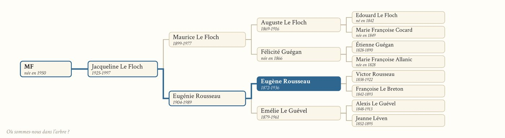
Eugène naît le 18 septembre 1872 à Kerraros, à Saint-Pierre-Quilbignon. Marin dès 1892, il est matelot timonier breveté en 1899, puis quartier-maître de timonerie. Le timonier tient la barre et veille aux signaux. Le 5 avril 1899, il épouse Emélie Le Guével. Leur premier enfant meurt à la naissance en 1900. Eugénie, votre grand-mère, naît le 2 septembre 1904.
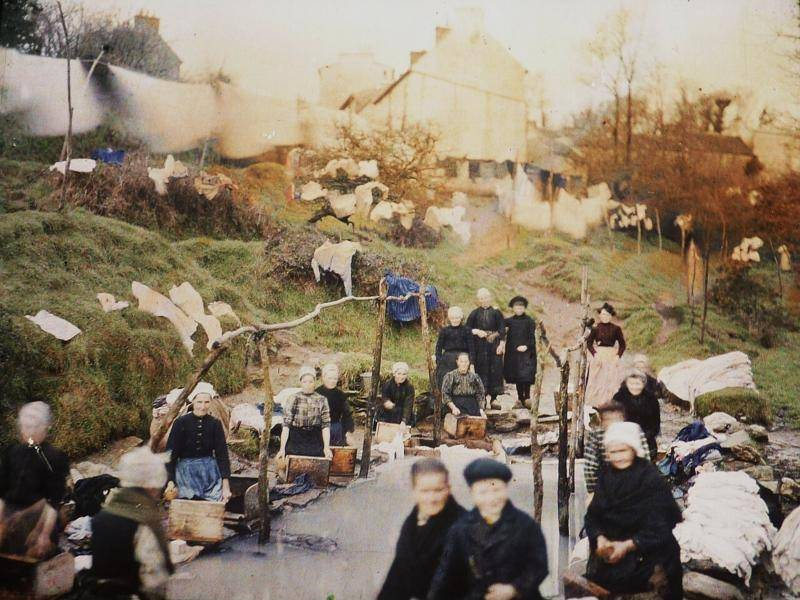
Le lavoir de Barullu, à Saint-Pierre-Quilbignon, en 1912 : l'une des toutes premières photographies en couleurs, un autochrome. Barullu est l'une des adresses de la famille relevées dans les actes, pour un décès en 1895. Les femmes que l'on voit ici sont les voisines d'Emélie, peut-être ses amies. Autochrome anonyme, domaine public.
En 1924, Eugène est maître de port, puis sous-lieutenant de port en 1926, et la famille vit à Rouen de 1923 à 1926. C'est ce qui explique le mariage de Maurice et Eugénie à Rouen, et la naissance de votre mère là-bas. Eugène prend sa retraite comme premier maître timonier, revient à Saint-Pierre-Quilbignon, et y meurt le 23 juin 1936. C'est son frère Louis, officier d'administration de la Marine et chevalier de la Légion d'honneur, qui déclare son décès.
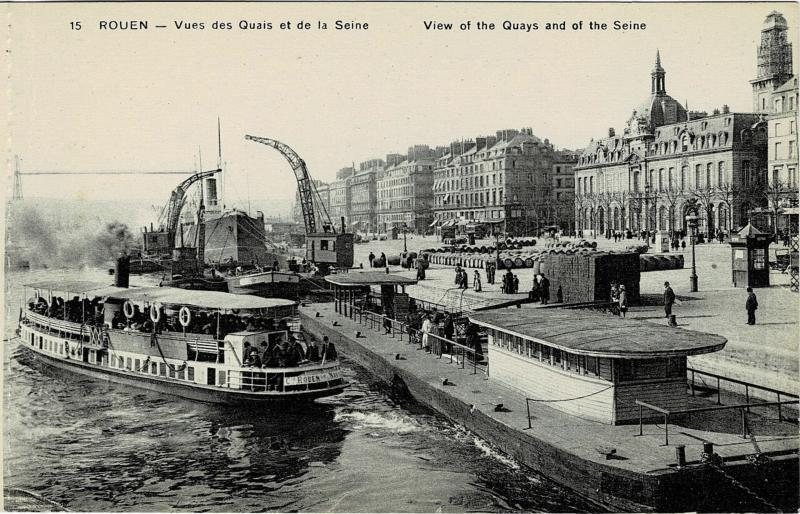
Les quais de Rouen et la Seine, vers 1922, à l'époque où Eugène y sert comme maître de port. Au fond à gauche, le pont transbordeur. Carte postale, domaine public.
Maurice Le Floch, le cheminot (1899-1977)
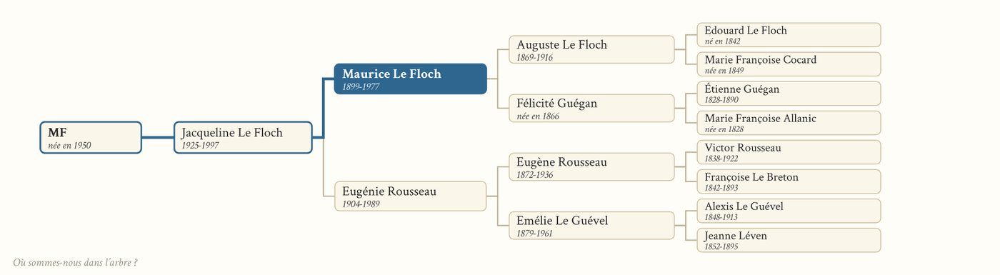
Votre grand-père Maurice Auguste Edouard porte les prénoms de son père et de son grand-père. Il naît le 22 janvier 1899 à Kernével, et perd son père en mer à 17 ans. Lui choisit la terre ferme : en 1924, il est ajusteur aux Chemins de fer de l'État, le réseau qui desservait la Bretagne et la Normandie. Il épouse Eugénie à Rouen le 23 août 1924. Elle a tout juste 20 ans.
Une locomotive des Chemins de fer de l'État en 1932, photographiée par l'agence Rol. En 1909, l'État avait racheté la Compagnie de l'Ouest, au bord de la faillite, qui desservait la Normandie et la Bretagne. C'est ce réseau qui emploie Maurice comme ajusteur en 1924, avant sa fusion dans la SNCF en 1938. Domaine public (Bibliothèque nationale de France).
Une piste : Maurice et la Grande Guerre. Né en janvier 1899, Maurice appartient à la « classe 1919 », celle des jeunes gens qui ont eu vingt ans en 1919. Sa fiche matricule militaire, conservée aux Archives du Morbihan, dira s'il a été appelé avant l'armistice, et peut-être où il a appris son métier. Les registres matricules sont consultables en ligne jusqu'à la classe 1921.
Votre mère Jacqueline naît à Rouen le 17 juin 1925. La famille s'installe ensuite à Rennes. Maurice prend sa retraite de la SNCF, et vit en 1961 rue Oradour-sur-Glane, à Rennes, lorsqu'il déclare le décès de sa belle-mère Emélie. Il meurt à Rennes le 10 décembre 1977.
Jacqueline Le Floch (1925-1997)
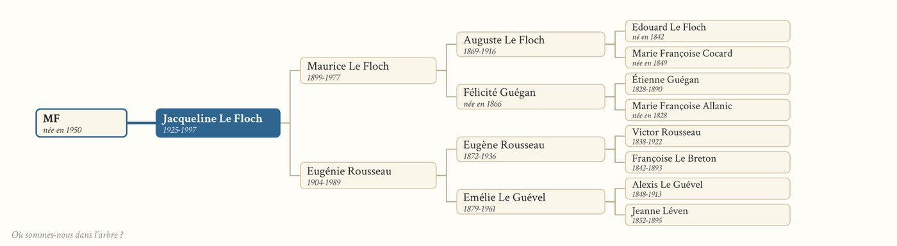
Votre mère grandit entre deux mondes : une mère fille de marin brestois, un père fils de marin morbihannais devenu cheminot. Elle épouse Jean Bigot, né à Fougères en 1926. Vous naissez à Rennes en 1950. Jacqueline meurt à Saint-Brieuc le 24 octobre 1997, dans la ville où sa mère Eugénie s'était éteinte en 1989.
Les racines de Jacqueline
En remontant chaque branche aussi loin que les registres et les arbres des cousins le permettent, l'enquête a retrouvé 322 ancêtres de votre mère, sur quatorze générations au-dessus d'elle. Les voici tous réunis dans une roue. Jacqueline est au centre ; autour d'elle, ses parents, puis ses grands-parents, et ainsi de suite, un anneau par génération, comme les cernes d'un arbre. Plus la couleur est profonde, plus l'ancêtre est ancien : le sable pour le XXᵉ siècle, le bleu de la mer au large pour le XVIᵉ. Les cases en pointillés sont les places qui attendent encore leur ancêtre.
Les racines de Jacqueline. Au nord-est, la gerbe des Cocard et de leurs voisins de Séné et de Batz ; au sud-ouest, les paysans et tisserands de Plougonver et les cordiers du pays de Brest. Une version grand format accompagne ce carnet.
Ce que raconte la roue
Un arbre très inégal. 248 des 322 ancêtres se trouvent du côté d'Auguste Le Floch, grâce aux registres de Batz-sur-Mer et de Séné, très bien conservés, et au travail de vos cousins généalogistes. À l'inverse, la branche Guégan s'arrête vers 1800 et la branche Le Guével vers 1777 : c'est là qu'il reste le plus à découvrir.
Les plus anciens. Guillaume Le Louedec, né à Séné en 1509, est l'ancêtre daté le plus ancien. Le plus lointain en nombre de générations est le couple formé par Jean Cocard et Aline Le Bihan, parents d'un Jean Cocard né vers 1540 à Batz, quatorze générations avant Jacqueline. Du côté Rousseau, la plus ancienne trace est Jean Le Guilloux, né vers 1639 à Plougonver ; du côté Le Floch, Jacques Le Floch, né à Arzal en 1635.
Quatre siècles. Parmi les ancêtres dont on connaît l'année de naissance, 33 sont nés au XVIᵉ siècle, 104 au XVIIᵉ, 45 au XVIIIᵉ et 24 au XIXᵉ.
Un petit monde. Les mêmes noms reviennent sans cesse : Le Franc (17 fois), Le Floch (15), Cocard et Le Huede (12), Benoist (10), Daniel et Le Doriol (8). Dans les paroisses côtières comme Séné ou Batz, on se mariait entre voisins, et souvent entre cousins : plusieurs couples apparaissent deux fois dans l'arbre.
Des gens de mer et de terre. Paludiers, laboureurs, charpentiers de navire, matelots, poissonniers et pêcheurs : la roue est d'abord celle du golfe du Morbihan et de la presqu'île guérandaise.
Combien d'ancêtres en tout ? En théorie, Jacqueline a 2 parents, 4 grands-parents, 8 arrière-grands-parents… et plus de 32 000 places sur quatorze générations. En réalité, comme des cousins se sont mariés entre eux, plusieurs places sont occupées par les mêmes personnes. Retrouver 322 ancêtres, c'est déjà un très beau résultat : les cases en pointillés sont autant de pistes pour la suite.
D'où venaient-ils ? Quatre siècles, sept pays
En remontant chaque lignée jusqu'au bout des registres, on découvre que vos ancêtres ne sont pas tous nés au bord de l'eau. Ils viennent de sept petits pays de Bretagne, et presque tous ont fini par converger vers deux ports : Lorient et Brest.
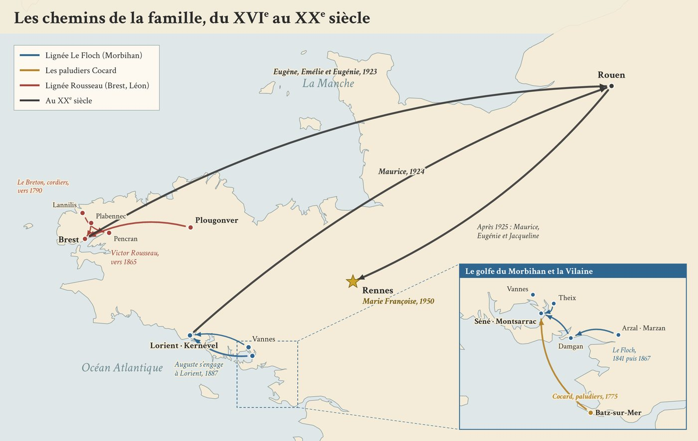
Les chemins de la famille. Les lignées convergent d'abord vers deux ports, Lorient et Brest. Au XXᵉ siècle, le métier d'Eugène emmène la famille à Rouen, où se marient Maurice et Eugénie et où naît Jacqueline, avant l'installation à Rennes.
Une seconde carte montre, lieu par lieu, combien d'ancêtres de Jacqueline y sont nés, y ont vécu ou y sont morts. Deux paroisses dominent tout : Séné, avec 74 ancêtres, et Batz-sur-Mer, avec 61. Viennent ensuite Marzan (20), Plougonver (15) et Saint-Pierre-Quilbignon (10).
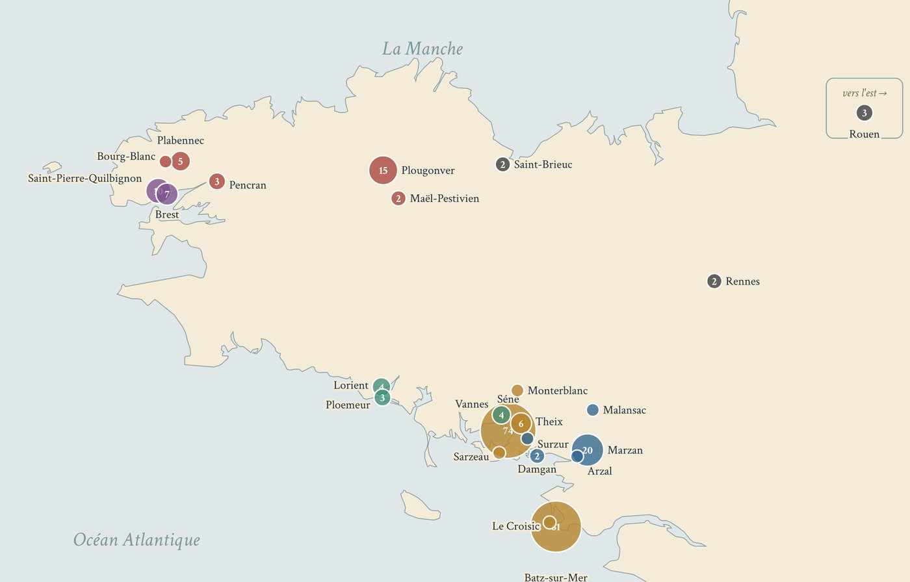
Les lieux des ancêtres de Jacqueline : la taille des cercles dépend du nombre d'ancêtres, la couleur de la lignée la plus représentée (bleu : Le Floch ; ocre : Cocard et Séné ; vert : Guégan et Allanic ; rouge : Rousseau et Le Breton ; violet : Le Guével et Léven ; gris : la famille proche).
Toutes ces informations ne tiennent pas sur une page. La carte existe donc aussi en version interactive : en touchant un lieu, on voit la liste de tous les ancêtres qui y sont liés, avec leurs dates et leurs métiers, et un curseur permet de remonter le temps, de 1997 jusqu'aux paludiers de Batz vers 1550.
Les paludiers de Batz : la lignée Cocard (vers 1540-1849)
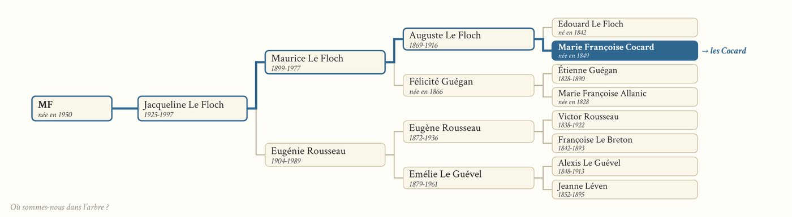
C'est la plus ancienne. Elle commence avec Jean Cocard, né vers 1540 à Batz-sur-Mer, au cœur des marais salants de Guérande, fils d'un autre Jean Cocard et d'Aline Le Bihan. Pendant deux siècles, ses descendants y restent : Pierre (1569), Michel (1595), Jan (1630, mort au Croisic en 1691), Jean (1653-1712), qualifié de paludier, Guillaume (1683-1755), Charles (1715-1782).
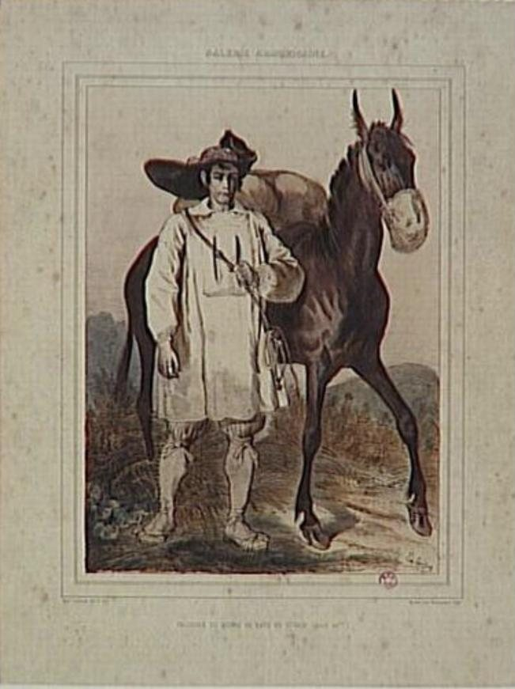
Paludier du Bourg-de-Batz en voyage, lithographie de François-Hippolyte Lalaisse pour la « Galerie armoricaine », vers 1845. Les paludiers allaient eux-mêmes vendre leur sel dans l'intérieur des terres, à dos de mulet. Musée des Civilisations de l'Europe et de la Méditerranée, domaine public.
Au XVIIIᵉ siècle, le chapitre de la cathédrale de Vannes crée des salines à Séné. Pour les construire, il fait venir des paludiers de la presqu'île de Guérande, la plupart originaires de Bourg-de-Batz (Inventaire du patrimoine). René Cocard, fils de Charles, fait partie de cette migration : paludier, il épouse Olive Chapon à Séné en 1775 et y meurt en 1802. Son fils Jean est journalier, son petit-fils Sylvestre (1808-1880) devient marin à Montsarrac. En trois générations, la famille passe du sel à la mer.
Le contexte : des salines nées d'une faillite. Si le chapitre de Vannes s'est lancé dans le sel, c'est qu'il avait été ruiné par l'effondrement du système de Law, en 1720. Il obtient du roi en 1721 les terres incultes de la côte de Séné et y fait construire des salines à partir de 1725, avec des paludiers venus de Guérande, où ils étaient trop nombreux. L'affaire est un succès. Sous la Révolution, les salines deviennent biens nationaux et sont vendues en 1791. Puis l'activité décline : le dernier paludier de Séné cesse le travail en 1951. Pendant ce temps, les hommes de Séné se tournent vers la mer, sur leurs « sinagots » aux voiles rouges : plus de 150 de ces bateaux pêchaient dans le golfe vers 1910.
Les laboureurs du golfe : la lignée Le Bras (1639-1871)
Jean Le Bras (1639-1719) et son fils Olivier (1675-1745) sont de Theix, à l'est de Vannes. Julien Le Bras, laboureur, né à Theix en 1715, s'installe à Séné où il meurt en 1792. Son fils Julien (1765-1815) est laboureur lui aussi. Sa fille Elisabeth épouse en 1837 Sylvestre Cocard, le marin : la terre et le sel se rejoignent.
Les Le Floch de la Vilaine : trois générations d'uniformes (1635-1916)
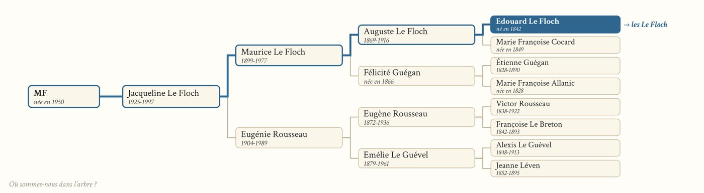
Jacques Le Floch naît en 1635 à Arzal, au bord de la Vilaine, et se marie à Marzan en 1668. Ses descendants y vivent pendant plus d'un siècle : Jean (1687-1758), François (1730-1797), Jean (vers 1764-avant 1827). Vincent François Le Floch, né à Marzan en 1808, devient préposé des douanes. Il épouse à Damgan en 1841 Marie Josèphe Provost, une domestique née à Malansac, et meurt à Surzur en 1855. Son fils Edouard sera douanier à son tour, et son petit-fils Auguste marin de l'État.
Les paysans-tisserands de Plougonver : la lignée Rousseau (vers 1639-1922)
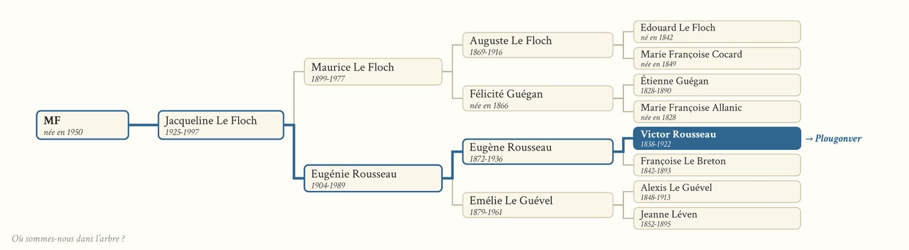
Les Rousseau de Brest viennent de l'intérieur des terres : Plougonver, dans les Côtes-d'Armor. On y trouve Jean Le Guilloux (vers 1639-1709), puis Henry Le Rousseau, marié à Plougonver en 1748, et son fils Henry (1753-1819), cultivateur. Yves Le Rousseau y naît le 15 ventôse an II (5 mars 1794), en pleine Révolution. Laboureur et tisserand, il épouse en 1822 Françoise Coïc, fille d'un tisserand de Maël-Pestivien.
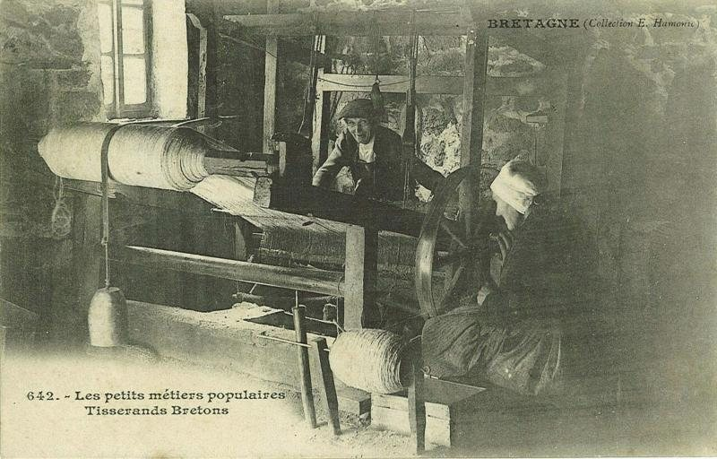
Tisserands bretons au métier, carte postale des années 1910 (collection E. Hamonic). C'est le métier d'Yves Le Rousseau, laboureur et tisserand à Plougonver. Domaine public.
Le contexte : la toile, la révolte et l'exode. Du XVIIᵉ au début du XIXᵉ siècle, le centre de la Bretagne vit de la toile de lin. On cultive le lin dans le Trégor, on le tisse dans les campagnes de l'intérieur, et les toiles dites « bretagnes » partent de Saint-Malo jusqu'aux colonies espagnoles d'Amérique. Dans les Côtes-d'Armor, environ 35 000 personnes en vivent au plus fort de cette activité. Mais au XIXᵉ siècle, les marchés se ferment et le tissage décline jusqu'à disparaître : beaucoup de jeunes partent alors vers les villes et les ports. Le départ de Victor pour l'arsenal de Brest s'inscrit dans ce mouvement. Plus tôt, en juillet 1675, la révolte des Bonnets rouges contre les nouveaux impôts de Louis XIV avait gagné le pays : le 12 juillet, plus de 200 « mutins » se soulèvent à Callac, la ville voisine de Plougonver. Votre ancêtre Jean Le Guilloux avait alors environ 36 ans.
Son fils Victor, né en 1838, est matelot à Plougonver lors de son mariage en 1863. Il descend ensuite à Brest : canotier au port en 1866, gardien au port en 1878, puis gardien de bureau jusqu'à sa retraite. Comme des milliers de Bretons de l'intérieur au XIXᵉ siècle, il quitte la terre pour l'arsenal. Au fil des actes du XIXᵉ siècle, « Le Rousseau » devient simplement « Rousseau ».
Les cordiers et cultivateurs du Léon : les lignées Le Breton et Pallier
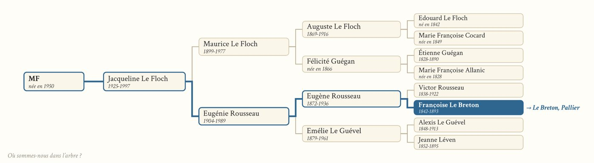
Corentin Le Breton, baptisé à Lannilis en 1741, est cordier à Penhoat, en Pencran, près de Landerneau. Son fils Marc (vers 1768-1819) est fileur à la corderie du port de Brest sous la Révolution, puis cordier. Son petit-fils Yves Marie (1807-1890) est journalier au port de Brest pendant plus de trente ans. Du côté de sa femme, Marie Anne Pailler, on remonte à des cultivateurs de Plabennec : Tanguy Pallier (1762-1817), Jean Pallier (1721), Guillaume Omnès (vers 1704-1758).
Le contexte : la corderie et le bagne. La grande corderie de l'arsenal, où Marc Le Breton filait le chanvre pour les cordages des vaisseaux, se trouvait tout près du bagne, construit à côté de la « corderie haute ». Ouvriers libres et forçats travaillaient ainsi dans le même port, à quelques mètres les uns des autres.
Les ouvriers de l'arsenal : les lignées Le Guével et Léven
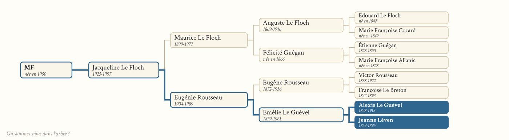
Mathieu Louis Le Guével (vers 1816-1853), fils de Tanguy Le Guével, est journalier puis charpentier au port de Brest. Jean Marie Léven (vers 1821-1872) est perceur au port de 1850 à 1871. Leurs enfants se marient deux fois entre eux : Tanguy Le Guével épouse Marie Yvonne Léven en 1870, et son frère Alexis épouse la sœur de celle-ci, Jeanne Yvonne, en 1872.
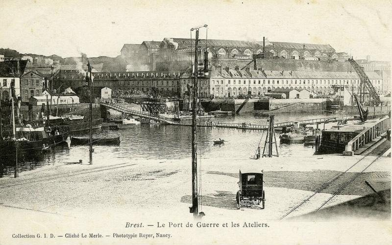
Le port de guerre et les ateliers de l'arsenal de Brest, sur la Penfeld, vers 1900 : le monde de travail des Le Guével et des Léven. En haut, les ateliers des Capucins. Carte postale (cliché Le Merle), Archives de Brest, licence CC BY-SA 4.0.
Le charpentier de moulin de Vannes et la famille Guégan de Lorient : les lignées Allanic et Guégan
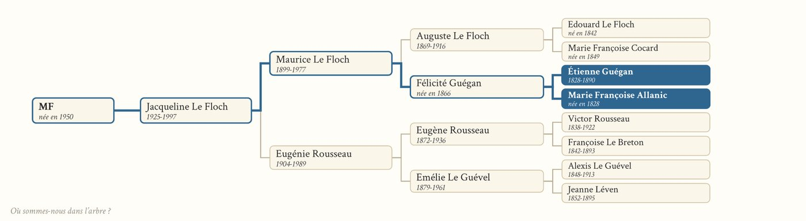
Jean François Allanic (vers 1798-1837), charpentier de moulin, et Colombanne Merlet (vers 1803-1843) vivent à Vannes. Maurice Guégan et Marie Françoise Richard, nés vers 1798 et 1803, sont les parents d'Étienne François Guégan, né à Lorient. C'est ici que l'enquête s'arrête pour l'instant : ce sont les prochaines pistes à suivre.
Les métiers de la famille
Votre arbre manuscrit indiquait deux métiers : charpentier de moulin pour Jean François Allanic, et douanier pour Étienne Guégan. Les deux sont exacts. Les actes en révèlent une trentaine d'autres, et mis bout à bout, ils racontent une histoire à eux seuls : en trois siècles, la famille passe de la terre et du sel au service de l'État.
| Époque | Qui | Métier | Où |
|---|---|---|---|
| XVIᵉ-XVIIIᵉ s. | Les Cocard | paludiers | Batz-sur-Mer, puis Séné |
| XVIIᵉ-XVIIIᵉ s. | Le Guilloux, Le Rousseau, Christin | laboureurs et tisserands | Plougonver |
| XVIIIᵉ s. | Julien Le Bras | laboureur | Theix, Séné |
| XVIIIᵉ s. | Corentin Le Breton | cordier | Pencran |
| vers 1800 | Marc Le Breton | fileur à la corderie du port | Brest |
| vers 1800 | Tanguy Pallier | cultivateur | Plabennec |
| vers 1800 | Yves Coïc | tisserand | Maël-Pestivien |
| 1800-1840 | Jean François Allanic | charpentier de moulin | Vannes |
| 1820-1860 | Yves Le Rousseau | laboureur et tisserand | Plougonver |
| 1830-1855 | Vincent François Le Floch | préposé des douanes | Damgan, Surzur |
| 1830-1880 | Sylvestre Cocard | marin | Montsarrac (Séné) |
| 1830-1890 | Yves Marie Le Breton | journalier au port | Brest |
| 1840-1853 | Mathieu Louis Le Guével | journalier, puis charpentier au port | Brest |
| 1840-1872 | Jean Marie Léven | perceur au port | Brest |
| XIXᵉ s. | Marie Josèphe Provost | domestique | Damgan |
| 1850-1890 | Étienne Guégan, Edouard Le Floch | douaniers | Vannes, Ploemeur, Séné |
| 1860-1900 | Marie Françoise Allanic, Marie Françoise Cocard | lingères | Ploemeur, Séné |
| 1860-1920 | Victor Rousseau | matelot, canotier puis gardien au port | Brest |
| 1865-1913 | Alexis Le Guével | quartier-maître canonnier, médaillé militaire | Brest |
| 1870-1895 | Jeanne Léven | couturière | Saint-Pierre-Quilbignon |
| 1887-1916 | Auguste Le Floch | marin de l'État | Lorient |
| 1890-1936 | Eugène Rousseau | premier maître timonier, puis maître de port | Brest, Rouen |
| 1920-1960 | Maurice Le Floch | ajusteur aux Chemins de fer de l'État | Rouen, Rennes |
La terre, le sel et la toile
Jusqu'au début du XIXᵉ siècle, vos ancêtres vivent de ce que produisent la terre et la mer, dans des villages où chacun connaît tout le monde. Le laboureur est un paysan qui possède un attelage, et donc un notable de village ; le tisserand travaille chez lui, entre deux saisons aux champs, pour des marchands de toile qui revendent au loin. Le paludier, lui, vit au rythme du soleil : l'hiver et le printemps à réparer les talus et vider les bassins, l'été à récolter le sel, quand le temps le permet, puis à le vendre lui-même dans les campagnes. Une mauvaise saison de pluie, et c'est la gêne pour toute l'année. Ces mondes sont soudés : on se marie entre familles de paludiers, entre familles de tisserands, souvent entre cousins, ce que l'arbre montre bien.
Le port et l'arsenal
À Brest, à partir de la fin du XVIIIᵉ siècle, une branche descend de la campagne vers l'arsenal : fileur à la corderie, journalier, charpentier, perceur. Le perceur perçait à la main les trous des rivets dans les plaques de fer : c'est l'époque où l'on passe des vaisseaux en bois aux navires cuirassés, et Jean Marie Léven en est un ouvrier. L'arsenal emploie des milliers d'hommes, avec une hiérarchie très stricte, du journalier payé à la journée à l'ouvrier immatriculé, puis au contremaître. Y entrer, c'est la sécurité d'un salaire régulier et, plus tard, d'une pension : un vrai progrès pour des fils de paysans. Les familles d'ouvriers vivent à Recouvrance et à Saint-Pierre-Quilbignon, à deux pas des portes de l'arsenal, et se marient entre elles : les Le Guével, les Léven et les Rousseau habitent les mêmes rues.
L'uniforme : douaniers et marins de l'État
Au XIXᵉ siècle, les hommes de la famille entrent presque tous au service de l'État. Le douanier surveille la côte et les marais salants, le marin sert sur les navires de guerre, Victor passe de matelot à canotier puis gardien au port. Ce sont des métiers durs et mal payés, mais sûrs, avec un rang, un uniforme et une retraite. Ils imposent aussi une vie de déplacements et d'absences : le douanier change de poste, le marin part des mois, parfois des années. Alexis gagne la médaille militaire comme quartier-maître canonnier ; Eugène monte jusqu'au grade de premier maître, le plus haut des sous-officiers, avant de devenir maître de port, chargé de la police et des mouvements des navires dans un port.
Le travail des femmes
Les actes donnent aussi le métier des femmes : lingère, couturière, domestique. Ce n'est pas un détail. Avec des maris en mer ou en tournée, et des soldes modestes, leur travail fait vivre le foyer. La lingère lave, repasse et entretient le linge des autres ; la couturière coud à domicile ou chez des clients. Dans les villes de la Marine, ces femmes travaillent aussi pour les marins, et tiennent seules la maison pendant les campagnes : Jeanne Léven élève ses enfants pendant qu'Alexis navigue.
Le rail
Avec Maurice, la famille quitte la mer pour le chemin de fer. L'ajusteur est un ouvrier qualifié qui façonne et ajuste à la lime les pièces des locomotives, au dixième de millimètre. C'est encore un métier de l'État, puisque les Chemins de fer de l'État sont un réseau public. Les cheminots forment un monde à part, avec leurs cités, leurs cantines, leurs syndicats et leurs mutations d'un dépôt à l'autre : c'est ainsi que la famille passe de Rouen à Rennes, où vous naissez.
En résumé. En trois siècles, vos ancêtres sont passés du champ, du marais salant et du métier à tisser à l'arsenal, à la Douane, à la Marine et au rail. C'est l'histoire de toute une partie de la Bretagne, qui a quitté la terre pour les ports et les services de l'État.
Vos ancêtres dans l'Histoire
Votre famille a vécu au premier rang des grands événements maritimes de la Bretagne : les deux guerres mondiales se sont jouées, littéralement, devant leurs fenêtres.
Quatre siècles de famille dans l’Histoire
- vers 1540 · François Iᵉʳ règne ; la Bretagne est unie à la France depuis 1532
Jean Cocard naît à Batz-sur-Mer, au pays des paludiers - 1562-1598 · Guerres de Religion
Pierre (1569) et Michel (1595) Cocard naissent à Batz - vers 1639 · Règne de Louis XIII
Jacques Le Floch naît à Arzal (1635) ; Jean Le Guilloux à Plougonver - 1666 · Fondation de Lorient par la Compagnie des Indes
Les Le Floch vivent à Marzan, les Le Bras à Theix - 1691 · Règne de Louis XIV
Jan Cocard meurt au Croisic - 1725 · Le chapitre de Vannes crée les salines de Séné
Il fait venir des paludiers de Bourg-de-Batz - 1746 · Les Anglais encerclent Lorient
René Cocard naît chez Charles, paludier à Batz - 1775 · Règne de Louis XVI
René Cocard, paludier, épouse Olive Chapon à Séné - 1789-1799 · La Révolution et son calendrier républicain
Yves Le Rousseau naît à Plougonver le 15 ventôse an II (1794) - 1808 · Napoléon Iᵉʳ, empereur
Naissent Sylvestre Cocard, futur marin, et Vincent Le Floch, futur douanier - 1848 · Révolution de 1848
Alexis Le Guével naît à Recouvrance ; son père est charpentier au port - 1866 · Second Empire
Victor Rousseau a quitté Plougonver : il est canotier au port de Brest - 1870-1872 · Guerre franco-prussienne
Alexis épouse Jeanne Léven ; Eugène Rousseau naît (1872) - 1887 · Troisième République
Auguste Le Floch s’engage dans la Marine à 17 ans - 1899 · Lancement du cuirassé Suffren à Brest
Maurice naît à Kernével ; Eugène épouse Emélie - 1916 · Grande Guerre : le Suffren est torpillé au large de Lisbonne
Auguste disparaît avec les 648 hommes de l’équipage - 1924-1925 · Entre-deux-guerres
Maurice épouse Eugénie à Rouen ; Jacqueline y naît en 1925 - 1940-1944 · Dönitz à Kernével ; siège de Brest du 7 août au 18 septembre 1944
Joseph Ernest Le Guével meurt le 5 septembre 1944 - 1950 · Quatrième République
Marie Françoise naît à Rennes
Le tableau ci-dessous détaille les événements du XXᵉ siècle qui ont touché la famille de près, avec leurs sources.
| Année | Dans l'Histoire | Dans votre famille |
|---|---|---|
| 1945 | Saint-Pierre-Quilbignon, Lambézellec et Saint-Marc sont rattachées à Brest (Geneawiki) | La commune natale d'Eugène et d'Eugénie Rousseau disparaît ; elle devient un quartier de Brest |
| 1944 | Siège de Brest du 7 août au 18 septembre : le VIIIᵉ corps américain affronte 40 000 soldats allemands, et plus de 1 000 tonnes de bombes tombent sur la ville (frise du lycée de l'Iroise) | Joseph Ernest Le Guével, frère d'Emélie, meurt le 5 septembre près de Saint-Renan |
| 1940-1942 | L'amiral Dönitz installe son poste de commandement dans la villa Kerlilon, à Kernével, et y dirige la bataille de l'Atlantique (Inventaire du patrimoine) | Kernével est le lieu de naissance de Maurice, dont le père a été tué par un sous-marin allemand en 1916 |
| 1923-1926 | Le port de Rouen est l'un des grands ports de France | Eugène Rousseau y est maître de port ; Maurice et Eugénie s'y marient ; votre mère y naît |
| 1916 | Le cuirassé Suffren est coulé au large de Lisbonne, 648 morts (uboat.net) | Auguste Le Floch disparaît en mer |
| fin du XIXᵉ siècle | Le cabotage s'effondre face au chemin de fer ; à Montsarrac, la population passe de 304 habitants en 1841 à 210 en 1901 (Inventaire du patrimoine) | Auguste quitte Montsarrac pour la Marine en 1887 ; son fils deviendra cheminot |
| 1746 | Les Anglais encerclent Lorient puis se retirent ; on fortifie la côte de Ploemeur (Inventaire du patrimoine) | Vos ancêtres Cocard, Benoist et Le Franc vivent alors à Séné, de l'autre côté du golfe |
Trois lieux de famille
Recouvrance (Brest) : le quartier natal d'Alexis Le Guével s'est développé autour de la chapelle Notre-Dame de Recouvrance, où l'on priait pour le bon retour des marins (Brest métropole, parcours Recouvrance). Le nom même du quartier vient de là.
Montsarrac (Séné) : un hameau isolé au bout de la presqu'île, lieu de passage vers la presqu'île de Rhuys depuis au moins le XIVᵉ siècle, dont les hommes partaient presque tous en mer.
Kernével (Ploemeur, aujourd'hui Larmor-Plage) : la pointe qui ferme la rade de Lorient, où le goulet ne mesure que 300 mètres de large (préfecture du Morbihan). Depuis Kernével, on voit passer tous les navires de guerre qui entrent à Lorient.
Dans la presse d'époque
Un article est déjà identifié : le Courrier breton, journal du Morbihan, annonce le 17 décembre 1916 la disparition d'Auguste Le Floch dans le torpillage du Suffren. Philippe Bouchez-Le Franc, un généalogiste qui a travaillé sur cette branche, en a mis une copie sur sa fiche Geneanet, avec la fiche militaire d'Auguste, son acte d'engagement de 1887 et une image du naufrage.
Le site de la Bibliothèque nationale (Gallica) a bloqué mes recherches automatiques, et je n'ai donc pas pu aller plus loin dans les journaux numérisés. Voici où chercher, et quoi taper :
| Journal | Où le lire | Quoi chercher |
|---|---|---|
| Courrier breton, Le Nouvelliste du Morbihan | Archives du Morbihan (presse ancienne) | « Suffren » en décembre 1916 ; « Le Floch » et « Kernével » |
| La Dépêche de Brest | Gallica ou les Archives du Finistère | « Le Guével », « médaille militaire » (vers 1890) ; « Saint-Pierre-Quilbignon » et « Rousseau » |
| L'Ouest-Éclair (éditions de Brest, Lorient, Rennes, Rouen) | Gallica | « Suffren », liste des disparus (décembre 1916) ; « Rousseau maître de port » (1924-1926) ; avis de mariage Le Floch-Rousseau (août 1924) |
| Journal de Rouen | Archives de Seine-Maritime | mariage du 23 août 1924 ; Eugène Rousseau au port de Rouen |
| Journal officiel | Gallica | médaille militaire d'Alexis Le Guével ; Légion d'honneur de Louis Rousseau |
Astuce : dans Gallica, entrez le nom entre guillemets et limitez la recherche à la presse et à la période voulue. La reconnaissance du texte n'est pas parfaite, donc essayez aussi les variantes (« Le Guevel » sans accent, « Lefloch »).
Les trouvailles de l'enquête
Un cousin généalogiste. L'arbre le plus complet sur votre branche brestoise est celui de Frédéric Michel, sur Geneanet. Or Frédéric descend de Louis Rousseau, le frère d'Eugène. Vous êtes donc cousins : Victor Rousseau (1838-1922) est votre ancêtre commun. Il a déjà rassemblé des dizaines d'actes sur la famille, et il serait sans doute heureux de recevoir un message. Et ce n'est pas le seul : Philippe Bouchez-Le Franc, qui a retrouvé la lignée Cocard jusqu'en 1540, descend de Jean Cocard (1746-1815), le frère de votre ancêtre René. Charles Cocard, le paludier de Batz, est votre ancêtre commun.
Rousseau, deux fois. Votre grand-mère Eugénie était une Rousseau de Brest, et vous avez épousé un Rousseau, Jean-René, dont la famille vient de la Vienne et de la Touraine. Aucun lien n'est connu entre les deux familles : le nom est l'un des plus répandus de France. Les Rousseau brestois s'appelaient d'ailleurs encore « Le Rousseau » vers 1820.
Deux mariages croisés. En 1898, Marie Rousseau, sœur d'Eugène, épouse Louis Le Guével, un parent d'Emélie. Un an plus tard, Eugène épouse Emélie. À Saint-Pierre-Quilbignon, les deux familles se mêlaient déjà.
Quatorze générations au bord du golfe. Par votre arrière-arrière-grand-mère Marie Françoise Cocard, on remonte de père en fils jusqu'à Jean Cocard, né vers 1540, sous le règne de François Iᵉʳ. Il est votre ancêtre à la 14ᵉ génération, et ses descendants sont restés près de Séné pendant trois siècles.
Des cousins qui se marient entre eux. Dans les branches de Séné, plusieurs couples du XVIIᵉ siècle apparaissent deux fois dans votre arbre (les Benoist et les Le Franc). Dans ces paroisses côtières, on se mariait dans un rayon de quelques kilomètres, et des cousins finissaient par s'épouser.
Des prénoms qui voyagent. Maurice Auguste Edouard Le Floch porte les prénoms de son père et de son grand-père. Le premier vient probablement de Maurice Guégan, son arrière-grand-père maternel. Eugénie tient le sien de son père Eugène.
Des enfances brisées par la mer. Alexis Le Guével est orphelin à 5 ans, Edouard Le Floch perd son père à 12 ans, Maurice perd le sien en mer à 17 ans. Dans ces familles de marins, on grandissait souvent sans père.
Les coulisses de l'enquête
Vous vous demandez peut-être comment travaille un enquêteur comme moi. Le principe est simple : on part de ce que l'on sait, et on remonte d'acte en acte. L'acte de naissance de votre mère, à Rouen en 1925, donne les noms de ses parents ; leur acte de mariage, en 1924, donne l'âge, le métier, le domicile et les parents de chacun ; l'acte de naissance de Maurice, à Kernével en 1899, mène à Auguste, et ainsi de suite, une génération après l'autre, jusqu'à ce que les registres s'arrêtent.
Est-ce difficile ? Pas toujours, mais l'enquête est semée de pièges. Voici ceux dans lesquels j'ai failli tomber.
Les noms qui changent. Un même nom s'écrit de trois façons selon le curé ou le secrétaire de mairie. Le Guével devient Le Guerid sous une plume, Léven devient Lécen, Cocard devient Cocaud, et les « Le Rousseau » de Plougonver perdent leur article en arrivant à Brest.
Les arbres en ligne qui se trompent. Un arbre publié sur Internet donnait à Maurice une seconde épouse. Vous saviez qu'il ne s'était marié qu'une fois, et vous aviez raison. Un arbre en ligne est une piste, jamais une preuve.
Les images mal légendées. Une photographie intitulée « le lancement du Suffren » montrait en réalité le croiseur de 1927, et non le cuirassé d'Auguste.
Les villages qui portent le même nom. Il existe un autre Kernével, dans le Finistère, près de Rosporden. J'ai bien failli illustrer la naissance de Maurice avec une carte postale de ce village-là !
Les communes qui disparaissent. Saint-Pierre-Quilbignon a été rattachée à Brest en 1945, et Kernével fait aujourd'hui partie de Larmor-Plage. Il faut chercher les actes sous l'ancien nom.
Le calendrier révolutionnaire. Yves Le Rousseau est né « le 15 ventôse an II » : il faut convertir pour lire le 5 mars 1794.
Les archives détruites. À Lorient, les bombardements de 1943 ont brûlé une grande partie des archives maritimes. Chaque guerre a laissé des trous dans les registres.
Les homonymes. Rousseau est l'un des noms les plus répandus de France : votre grand-mère Eugénie et votre mari Jean-René portent le même nom sans aucun lien connu.
Je dois aussi être honnête sur mes limites. Je n'ai pas pu feuilleter moi-même tous les registres originaux : une partie de mes résultats repose sur les transcriptions publiées par d'autres généalogistes, et le site de la Bibliothèque nationale m'a fermé sa porte. C'est pourquoi chaque date importante mérite d'être vérifiée sur l'acte lui-même, et c'est peut-être la plus belle partie de l'enquête qui vous attend : voir de vos yeux la signature d'Alexis ou celle d'Eugène au bas d'un acte.
Enfin, ce qui m'a le plus aidé, ce sont les autres. Votre arbre d'abord, puis le travail patient de généalogistes amateurs, dont deux de vos cousins, et celui des archivistes : les Archives de Brest viennent d'indexer plus de 610 000 actes d'état civil, y compris ceux de Saint-Pierre-Quilbignon, que l'on peut désormais chercher par nom.
Le jeu de piste : sur les pas de vos ancêtres
L'enquête continue sur le terrain. Le jeu de piste des gens de mer propose onze étapes sur une carte de la Bretagne. Chaque étape raconte ce qui s'est passé à cet endroit et ce qu'il reste à voir. Elle pose aussi une énigme dont la réponse est dans ce carnet. Chaque bonne réponse donne une lettre, et les onze lettres forment un mot qui résume toute l'enquête.
Ouvrir l’accueil du site (jeu, carte, roue)
La journée brestoise, au départ de la pointe Saint-Mathieu : la pointe Saint-Mathieu et son Mémorial des marins morts pour la France, Trégorff, Saint-Pierre-Quilbignon, Recouvrance. Le jeu propose aussi une balade dans Saint-Pierre-Quilbignon pour retrouver les lieux-dits de la famille : Kerarros, Kérébézon, Barullu, Tremilliau et l'ancienne rue de Brest.
Le grand tour, pour d'autres jours : Plougonver, Kernével, Vannes, Séné, la Vilaine, Batz-sur-Mer, et Rennes en finale.
Quelques anecdotes de plus pour la route
À Séné, en 1841, on comptait 98 douaniers pour 91 paludiers : ils gardaient le sel, de nouveau taxé depuis 1806 (caserne des douaniers des Quatre-Vents). Des guérites de douaniers subsistent sur le littoral, dont celle de La Garenne, près de Montsarrac (Inventaire du patrimoine).
Le dernier paludier de Séné a cessé son activité en 1951 (marais salants de Séné). Le sentier des « culs salés » traverse les anciens marais, et le village de Michotte a gardé ses maisons de paludiers (Tourisme Bretagne).
À Plougonver, la chapelle Saint-Tugdual, bâtie aux XVᵉ et XVIᵉ siècles, existait déjà quand Jean Le Guilloux s'est marié à Plougonver, en 1675.
À Recouvrance, le cimetière a été créé en 1690, et la ville de Brest en propose un livret de visite.
Les sites pour continuer à explorer
| Site | Ce qu'on y trouve |
|---|---|
| Inventaire du patrimoine de Bretagne | Des dossiers illustrés sur chaque lieu de famille : Montsarrac, les salines de Séné, Kernével, Plougonver, Saint-Pierre-Quilbignon |
| Gallica | Les journaux et les photographies de presse d'époque (Meurisse, Rol) |
| Geneawiki | Les monuments aux morts, commune par commune, et la liste des marins du Suffren |
| Brest, Ville d'art et d'histoire | Le parcours de Recouvrance, quartier historique |
| Archives du Morbihan et du Finistère | Les registres, les cadastres anciens et les cartes postales |
| Bécedia (Bretagne Culture Diversité) | Des articles d'histoire bretonne illustrés, par exemple sur le sel ou le siège de Brest |
Livres à chercher en bibliothèque : Autrefois Saint-Pierre Quilbignon (groupe « Mémoire de Saint-Pierre », 1992), Histoire… et histoires de Séné (Joseph Le Roch), Les Heures dures : le siège de Brest (Max Lafferre, 1945).
Pour reprendre l'enquête
Plusieurs pistes restent ouvertes, et la plupart ont leur réponse dans un registre. Les actes de plus de 75 ans sont consultables par tous ; on peut demander gratuitement une copie intégrale à la mairie, par courrier ou sur service-public.fr.
Les branches Guégan et Allanic
Chercher le mariage de Maurice Guégan et Marie Françoise Richard (Lorient, avant 1828) et celui de Jean François Allanic et Colombanne Merlet (Vannes, avant 1828), sur le site des Archives du Morbihan.
Les marins de la famille
Consulter la fiche « mort pour la France » d'Auguste sur Mémoire des hommes, et celle de Joseph Ernest Le Guével. Chercher le nom d'Auguste sur le monument aux morts de Ploemeur ou de Larmor-Plage, puis l'ajouter à la liste des disparus du Suffren sur Geneawiki, où il manque encore.
Demander les dossiers de carrière d'Auguste Le Floch, d'Eugène Rousseau et d'Alexis Le Guével au Service historique de la Défense (archives de la Marine à Brest et à Lorient) : on y trouve les navires, les campagnes, parfois le signalement physique.
Chercher le dossier de Légion d'honneur de Louis Rousseau dans la base Léonore.
Chercher le registre matricule d'Auguste dans les archives de l'Inscription maritime du quartier de Lorient (Service historique de la Défense, antenne de Lorient) : les matricules des gens de mer de Bretagne-Sud ont été numérisés.
Demander ou consulter en ligne la fiche matricule militaire de Maurice (classe 1919) aux Archives du Morbihan, et celle d'Eugène (classe 1892) aux Archives du Finistère.
Chercher Alexis, Joseph Ernest et Eugène dans les matricules des gens de mer de Brest, conservés au Service historique de la Défense à Brest.
Chercher Mathieu Louis Le Guével, Jean Marie Léven, Yves Marie Le Breton et Victor Rousseau dans les 68 registres matricules des ouvriers de l'arsenal de Brest (1829-1953), numérisés sur le site Mémoire des hommes : ils donnent le métier exact, l'atelier et la carrière de chacun.
Les cousins
Écrire à Frédéric Michel, votre cousin, par la messagerie de son arbre Geneanet.
Rassembler les photos, livrets de famille et souvenirs : qui se souvient d'Eugénie et de Maurice à Rennes ? D'Emélie, morte en 1961 ?
Pour aller plus loin sur les lieux
Visiter le Mémorial national des marins morts pour la France, à la pointe Saint-Mathieu, et la villa Kerlilon à Kernével, ouverte aux Journées du patrimoine.
Lire Sinagots, golfe du Morbihan, histoire d'une communauté maritime en Bretagne (Gilles Millot et Claude Maho, 2003) et Historique des activités maritimes du Kernével au Fort Bloqué (Comité d'histoire du pays de Ploemeur, 2009).
Et si l'envie vous prend d'écrire à votre tour : chaque mois de novembre, des dizaines de généalogistes blogueurs racontent leurs ancêtres à raison d'un article par jour, de A à Z (le « ChallengeAZ »). On y trouve beaucoup d'idées pour faire revivre une famille.
Les généalogistes qui ont aidé l'enquête
Cinq généalogistes amateurs ont publié sur Geneanet des arbres qui croisent le vôtre, et ce carnet repose en partie sur leur travail. Deux d'entre eux sont vos cousins. On peut leur écrire par la messagerie de Geneanet (un compte gratuit suffit), depuis leur page-contact. Un mot pour les remercier, leur parler de ce carnet ou échanger des photos leur fera sans doute plaisir, et ils ont peut-être des documents que vous n'avez pas.
| Généalogiste | Ce que son arbre apporte | Page-contact |
|---|---|---|
| Frédéric Michel, votre cousin | La branche brestoise : Rousseau, Le Guével, Léven, avec les actes et les adresses | geneanet.org/profil/strogoff |
| Philippe Bouchez-Le Franc, votre cousin | La lignée Cocard jusqu'en 1540, Auguste Le Floch et le Suffren | geneanet.org/profil/philbouchez |
| Christine Denoual | Les Le Floch de Marzan et Damgan | geneanet.org/profil/cdenoual |
| Chantal Perez | Félicité Guégan et sa famille | geneanet.org/profil/samlau2 |
| Catherine Gilanton | Étienne Guégan, douanier, et les Allanic de Vannes | geneanet.org/profil/fjgilanton |
Sources
Arbres Geneanet de Frédéric Michel (strogoff), Philippe Bouchez-Le Franc (philbouchez), Chantal Perez (samlau2), Christine Denoual (cdenoual) et Catherine Gilanton (fjgilanton), qui citent les actes des Archives du Morbihan, du Finistère et de Brest ; fichier des décès de l'INSEE ; Inventaire du patrimoine de Bretagne ; votre arbre manuscrit. Les informations tirées d'arbres en ligne sont à vérifier sur les registres originaux.
D'où viennent les adresses ? Les actes d'état civil indiquent toujours où l'événement a eu lieu : le domicile du défunt ou des parents, ou le lieu de naissance. Frédéric Michel a transcrit ces mentions dans son arbre (strogoff) : le 99 rue de Brest (décès de 1900), le 45 bourg (naissance d'Eugénie en 1904), Kérébézon (décès d'Eugène en 1936), Barullu (décès de 1895) et la rue d'Oradour-sur-Glane (décès d'Emélie en 1961). Les actes eux-mêmes se consultent aux Archives municipales de Brest, qui conservent les registres de Saint-Pierre-Quilbignon.
Illustrations. Carte postale du pont National : Bibliothèques de Brest, via Gallica et Wikimedia Commons (domaine public). Lavoir de Barullu (autochrome, 1912), tisserands bretons, quais de Rouen, paludier de Lalaisse (musée des Civilisations de l'Europe et de la Méditerranée) et locomotive de l'État (agence Rol, BnF) : domaine public, via Wikimedia Commons. Arsenal de Brest : Archives de Brest, licence CC BY-SA 4.0. Carte des chemins de la famille et petits arbres : dessinés pour ce carnet, la carte sur un fond Natural Earth. Contexte historique : Inventaire du patrimoine de Bretagne (Séné), Bécédia (sel et faux-saunage), Archives des Côtes-d'Armor (toiles et lin), Geneawiki et Service historique de la Défense (bagne, Inscription maritime), base HiSCoD de l'université de Caen (révolte de 1675).